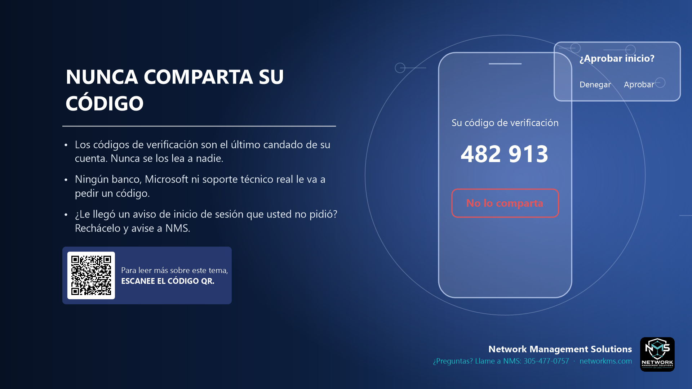

Nunca comparta su código

- Los códigos de verificación son el último candado de su cuenta. Nunca se los lea a nadie.
- Ningún banco, Microsoft ni soporte técnico real le va a pedir un código.
- ¿Le llegó un aviso de inicio de sesión que usted no pidió? Rechácelo y avise a NMS.
La autenticación de dos pasos (MFA) manda un código o un aviso de aprobación a su teléfono. Si un estafador ya tiene su contraseña, ese código es lo único que lo detiene.
Los estafadores llaman haciéndose pasar por el banco o por soporte técnico y dicen que le van a "mandar un código para verificarlo". Si usted se lo lee, entran a su cuenta.
Si su teléfono le pide aprobar un inicio de sesión que usted no empezó, alguien tiene su contraseña. Toque Denegar y llame a NMS para cambiarla.
¿Tiene dudas sobre un correo, mensaje o llamada? Llame a NMS antes de hacer clic: 305-477-0757 · networkms.com